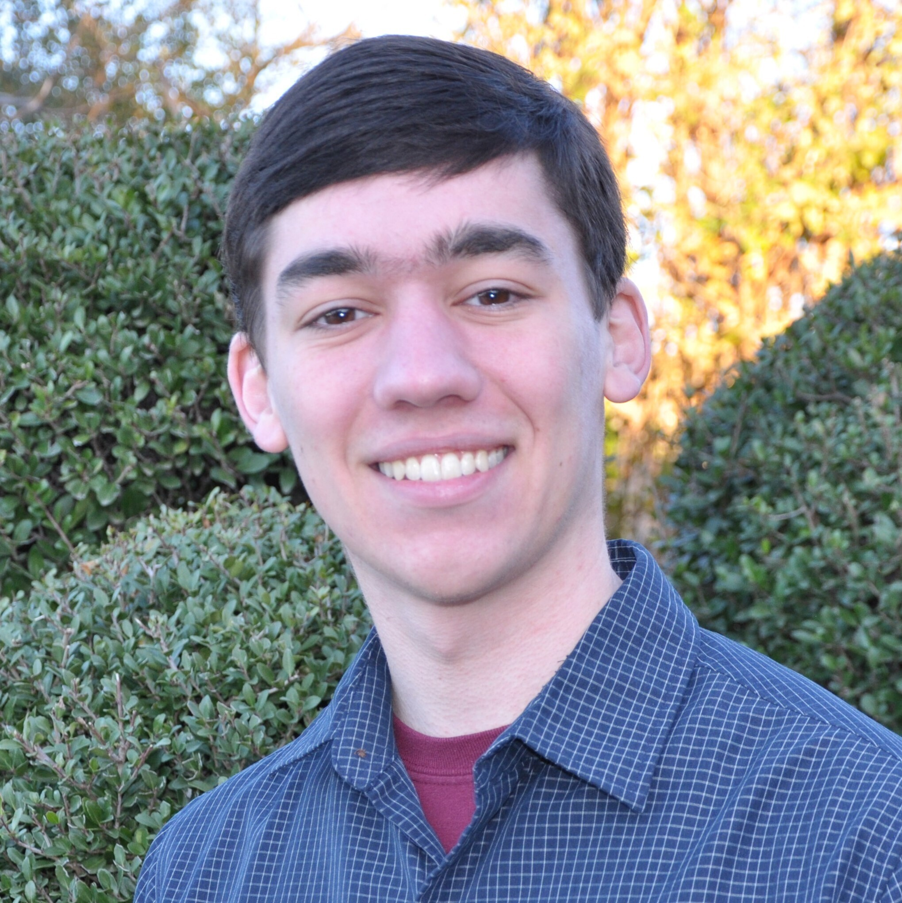
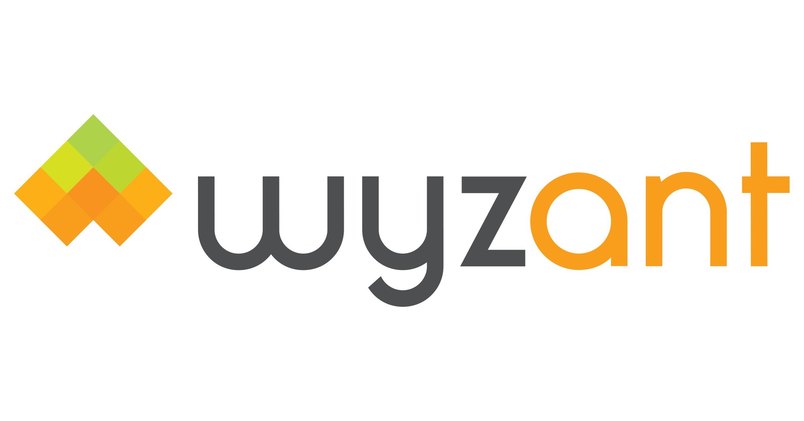

Nate Simmons
nisimmons01@gmail.com
(831) 402-3178
Github
LinkedIn
US Citizen
Education
University of Texas at Dallas - Richardson, TX
M.S. Computer Science - Expected Graduation -
May 2025
- Cybersecurity Concentration Track
- GPA: 3.799
- NSF CyberCorps: Scholarship for Service Recipient (~37k per year)
- Coursework: Information Security, Networks, Operating Systems,
Artificial Intelligence, Machine Learning
B.S. Computer Science - May 2023
- Cum Laude - GPA: 3.837
- Dean's List Recipient, Academic Excellence Scholarship Recipient
- Coursework: Imperative and Declarative programming, Databases,
Algorithms, Data Structures
Hirschi High International Baccalaureate School - Wichita Falls, TX
High School Diploma, International Baccalaureate Diploma - May
2019
- JROTC Battalion Commander
- Swim Team Captain
- National Honor Society Member
CompTIA Security+ Certification - To be completed February 2024
Skills
Cybersecurity: Burp Suite, Ghidra, WireShark, CAN Bus, UART
Languages: Java, C++ , Python, Bash scripts, Assembly, SQL, XML, Linux
Projects
Attendance Tracker Application Senior Capstone Project, Spring 2023
(proprietary code)
- Planned a multi-threaded Android Bluetooth client/server application
in Java
- Blueprinted and programmed back end for the system's graphical user
interface with Java/XML
- Coordinated a five person team, delegating responsibilities for
developing the application
- Programmed a distributed system of nodes that communicate using TCP
sockets in Java and Bash
- Implemented Roucairol and Carvalho's resource mutual exclusion
algorithm with vector clocks
- Designed graphical user interface and database system from scratch in
Java
- Conceived a three-tiered software design with presentation, service,
and data layers with UML
- Devised procedural game generation with algorithmic enemy and item
scaling
Experience

Private Java Tutoring - Wyzant
December 2020 - July 2023
- Responded to student requests, scheduled lessons, and formulated
lesson plans
- 400 hours tutored with dozens of students from across the country
- Instructed primarily on dynamic programming, algorithms, and
implementing APIs and libraries

Data Analysis Intern - Covetly
July 2021
- Utilized Excel and pivot tables in order to analyze and make
inferences on 400,000 records of sales data
- Compiled and presented reports to supervisor to influence advertising
decisions
AVID Tutor - Plano ISD October 2019 - December 2020
- Planned and conducted tutorial services for high school students
- Formulated lesson plans and collaborated with other tutors
Aircraft Mechanic Assistant - Mid-America
Flight Museum May 2019 - July 2019
- Utilized various skills in direct and indirect support of the museum
including working on airplanes, operating vehicles, cleaning equipment
Activities
- Competitive Cyber team -
August 2023 - Current
- TexSAW CTF
- Actively developing problems to be introduced for this CTF
- Deadface CTF - Placed 35th/1129 October 2023
- Sunshine CTF - Placed 32nd/800 October 2023
- Patriot CTF - Placed 66th/987 September 2023
Other Cyber Activities
- NSA Code Breakers Challenge September 2023 - December 2023
- Toyota Hackfesta CTF September 2023 - October 2023
- Utilized CAN Bus protocols to interact with Toyota PASTA and RAMN
systems
- Analyzed basic vulnerabilities related to I/O of the systems
- TryHackMe - Completing Cyber paths
Boy Scouts of America
- Eagle Scout - 400+ hours of community service in a multitude of
outlets including direct and indirect support of charity organizations.
- Order of the Arrow Vigil member - Elected by peers to be honored for
years of service to local lodge and council
- James E West Fellow - Order of the Arrow lodge service organization
donated $1000 to local Boy Scout council in my name
Languages
- English - Fluent
- Japanese - Conversational, basic reading and writing
- Korean - Basic, reading and writing
- American Sign Language - Basic